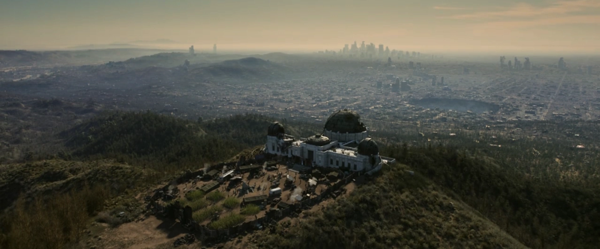

グリフィス天文台
Griffith Observatory
LOCATION DATA

グリフィス天文台 (Griffith Observatory) は、TVドラマ版のシーズン1のクライマックスの舞台となる、新カリフォルニア共和国 (NCR) 残党軍の要塞・本部ロケーションです。
背景
ロサンゼルスのハリウッドヒルズ（グリフィス公園内）の南斜面に位置する、かつて大戦前の実在する有名な公共天文台施設でした。
2296年時点では、「リー・モルデイヴァー」が率いる新カリフォルニア共和国 (NCR) の生き残り・残党軍がこの建物を接収し、要塞化して彼らの本部として使用しています。
入り口は重い防壁で守られ、内部にはNCRのパワードスーツ部隊や重武装した兵士たちが多数配備されています。また、巨大な天体望遠鏡があるドーム型の部屋など、かつての面影を残しています。
モルデイヴァーは、かつてのシェイディ・サンズのような都市を再建し、ウェイストランドに無尽蔵の電力を供給するための「コールドフュージョン（常温核融合）」の無限エネルギー炉を、この天文台の中に密かに構築していました。これは、彼女が大戦前に独自に研究していた成果の集大成でもありました。
TVシリーズでの登場 (第8話「始まり」)
ルーシーは、誘拐された父親「ハンク・マクレーン」を救出するため、長く過酷な旅の果てについにこのグリフィス天文台に到達します。彼女はモルデイヴァーに、シギ・ウィルジグから切断して運んできた頭部（中に入っているアーティファクト）を引き渡します。
天文台のドーム内で、モルデイヴァーは捕らえたハンクを引き合わせて、かつての「Vault-Tecの陰謀」や、シェイディ・サンズを核で吹き飛ばしたのが自分の父親であったという恐るべき真相をルーシーに暴露します。
やがて、コールドフュージョンを手に入れようとする「ブラザーフッド・オブ・スティール（B.O.S.）」の軍団（飛空艇プリドゥエンと多数のベルチバード、T-60部隊）が天文台を強襲。マキシマスもB.O.S.側として参戦し、天文台の敷地全体でNCR防衛軍とB.O.S.のナイトたちによる熾烈な総力戦（大規模バトル）が数時間にもわたって展開されます。
最終的にB.O.S.が制圧する中、致命傷を負ったモルデイヴァーは、自分が生涯をかけた「コールドフュージョン」を再起動し、破壊されたボーンヤード（ロサンゼルス）全域に再び無尽蔵の明かりを灯すことに成功してから息を引き取ります。
そして、グールと共に天文台を脱出したハンクは、パワーアーマーを着て夜空を飛び、ニューベガスを目指して逃亡します。

開発秘話
ロサンゼルスにある現実の「グリフィス天文台」そのものです。ジェームズ・ディーン主演の映画『理由なき反抗』や、『ラ・ラ・ランド』等の舞台としても使われた、ハリウッドとロサンゼルス一帯を一望できる世界的にも有名なスポットです。
シーズン1のフィナーレを飾る、Falloutドラマ版における「フーバーダム攻防戦」や「プロジェクト・ピュアリティ防衛戦」に相当する最大の決戦の舞台です。
NCRの旗が翻る防壁の前を、B.O.S.のパワーアーマー部隊がアサルトライフルを撃ちながら突撃してくる大乱戦は圧巻。「かつてのLAの夜景を、常温核融合によって一瞬で復活させる」というエモーショナルなシーンなど、Falloutらしさ全開のロケーションとなっています。
Category:Fallout TV series locations